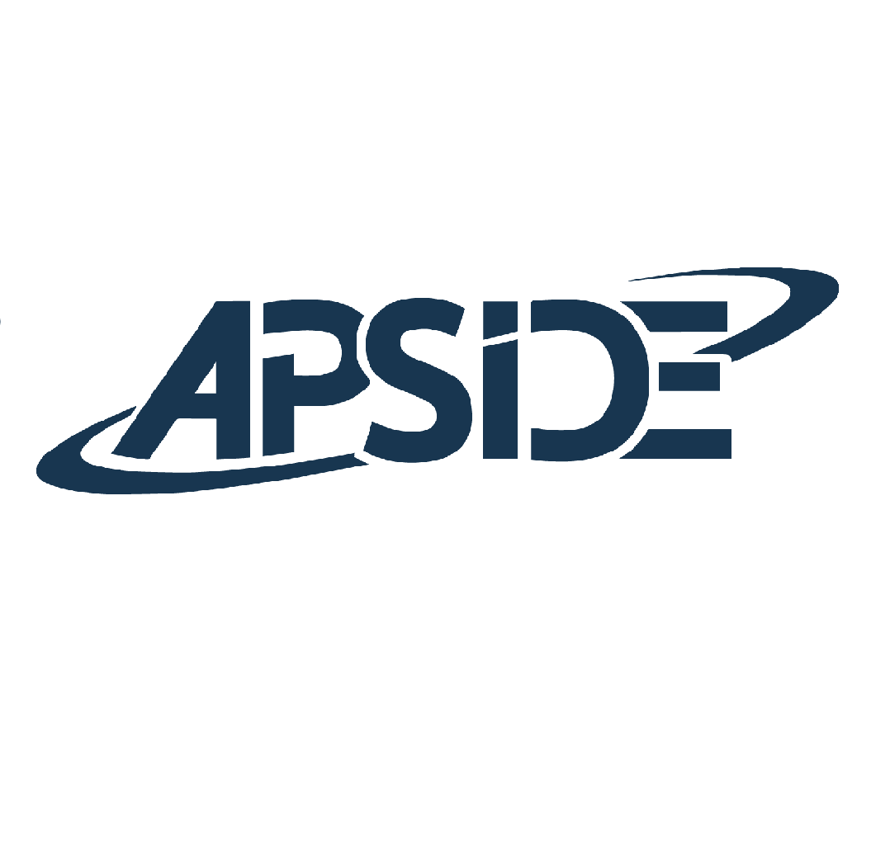
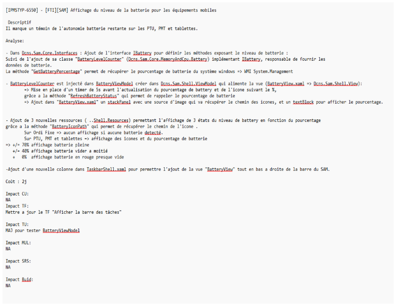
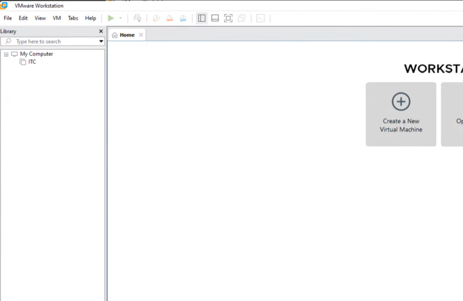
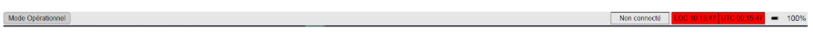

Stage de 1ère Année - APSIDE (Bordeaux)

Contexte et Objectifs du Stage
Au sein de l'agence Apside Bordeaux, spécialisée dans l'ingénierie logicielle et de conseil en systèmes d'information, j'ai intégré une équipe de développement travaillant sur des projets clients exigeants. Ma mission s'est concentrée sur l'analyse, l'intégration de nouvelles fonctionnalités applicatives et le traitement de correctifs complexes en exploitant le langage C# et l'architecture MVVM (Model-View-ViewModel) sous environnement WPF.
Analyse réflexive des compétences mobilisées
Clique sur une compétence pour déplier l'analyse et afficher la preuve technique associée.
Gérer le patrimoine informatique
Application concrète :
Dans le cadre de l'évolution de la solution logicielle du soft pour Naval Group, J'ai veillé à respecter la gestion des sauvegarde du soft.
Afin de ne pas casser le patrimoine logiciel, j'ai suivi les procédures de sauvegarde et de versioning, en m'assurant que chaque modification était correctement documentée et intégrée dans le système de contrôle de version Git. Avec ma propre branche et une validation par le client pour l'integrer dans la version finale du soft.

L’analyse faite pour le client afin qu'il puisse valider les modifications.Répondre aux incidents et aux demandes d'assistance
Application concrète :
J'ai été affecté à la résolution d'une anomalie bloquante signalée par un client final sur une application de bureau. Lors de l'utilisation de moniteurs très haute définition (résolution 4K), la Taskbar de l'application se retrouvait tronquée et illisible.
Pour traiter cet incident, j'ai configuré un environnement virtuel d'émulation graphique sous VMware pour reproduire précisément le comportement de l'affichage en 4K.

Outil utilisé pour l'émulation graphique
TaskBar tronquée lors d'une résolution 4K